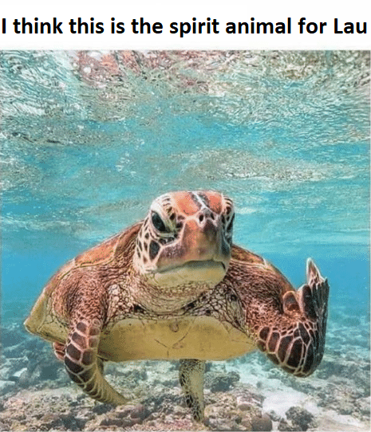
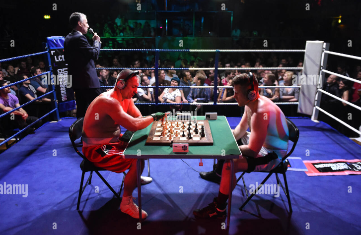
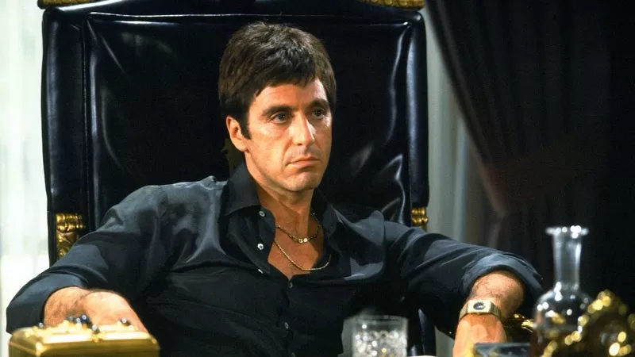

Welcome to Lau's Fanpage!
page design by Dimi Bertolami!
Lau is always a nice guy to have around. He never says much but when he speaks, you'll hear it!
3 words to describe Lau are:
Silent
but
deadly
I recently came across a picture of what I believe is his spirit animal. I hope it's accurate otherwise I'm sure Lau Will replace it with another image.

Lau's favorite sport is as you can see ChessBoxing
We have a chessgame here @ BeCode... Try taking Lau's horse in when you play against him in chess! I dare you to try!

to Discover Lau's favorite fictional character i had to search hard and long without result
if I had to guess I think his favorite fictional character is Tony Montana!
As an extra challenge please make Tony Montana look cool with CSS sunglasses
like here

Lau's favorite celebrity (besides from Paris Hilton) surely must be Bruce Lee!

Lau's hobbies
I have it from a respectable source that Lau is really into pokemon! I mean can you blame him?
The evolution challenge was all he ever wanted to do with his life and now he's having a bit of
trouble on how to continue to find pleasure in the small every day tasks now that he cannot work with
pokemon API's anymore.
If this provided information happens to be incorrect (I doubt it but it's possible)
Lau can only change this info on my FANPAGE by using Javascript